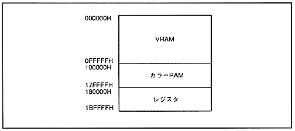

Return to previous page ｜ Return to menu ｜ Go to next page
-
1.2 Address map
- VDP2 is connected with two VRAMs for defining the pattern name table and character pattern data. It also has a 32K bit color RAM for defining color data. In addition, the internal registers are also managed. Figure 1.2 shows the address map of VRAM, color RAM, and registers managed by VDP2.
Figure 1.2 Address map

●VRAM
- Stores scroll screen image data and data tables required for each function.
∙ Read access by VDP2 is always prioritized over read / write access by CPU or DMA controller. Therefore, a wait cycle may enter the CPU or DMA controller depending on the access timing.
∙ Access by CPU or DMA controller is all possible in byte units, word units, and long word units.
-
Color RAM
- Stores sprite and scroll screen color data.
Also, if necessary, define the enable bit for the color operation function in the most significant bit.
∙ Read / write access from the CPU or DMA controller is always possible, but the image may be confused depending on the access timing.
∙ Access by CPU or DMA controller is only possible in word units and long word units. It cannot be accessed in byte units.
Return to previous page ｜ Return to menu ｜ Go to next page